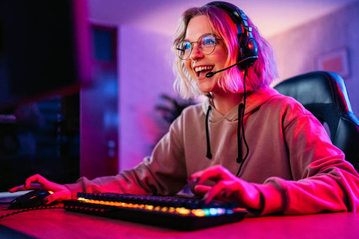

Art
Art is probably my #1 favorite hobby. I enjoy the process of being characters I've watched, read, or played come to life in ways that never happened in their original media. I also enjoy the process of creating new characters from scratch and making they're origins and backstory come to life.
Reading
After art is reading, I just enjoy reading and learning about different characters and trying to figure out what the author had in mind when reading their stories. I'll read fiction, non-fiction, sci-fi, basically anything I can get a hold of. My favorite type is actually fanfiction. I enjoy it because it is characters I am already acquainted with being put into different scenarios and "what-if" situations.
Video Games

And after reading is video games, I love playing them and running around as different characters. I love trying to figure out the plot and lore of a story. Plus I love when I can create my own character and when the characters you can be are really unique and interesting. I also love playing video games with my brother, though that has lead to many screaming matches at each other, most of which just have to do with the fact that we get loud hen we are passionate about something, and we talk through our "Jack and Jill" instead calling each other.